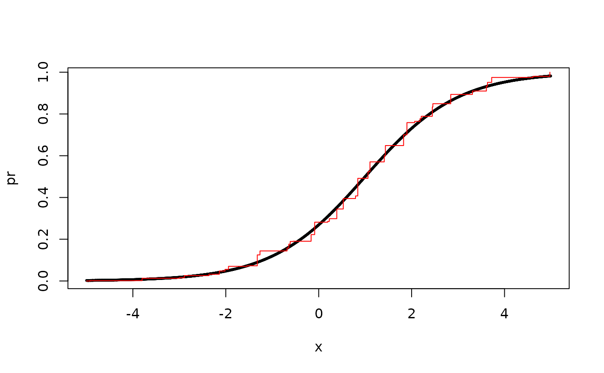

Pooled Adjacent Violators Algorithm
Arguments
- y
response variable
- x
(optional) predictor vector (otherwise y is assumed
to be a priori sorted according to relevant predictor)
- weights
weights (optional) weights
Value
List with index (idx) of jump points and values (value)
at each jump point.
Examples
x <- runif(5e3, -5, 5)
pr <- lava::expit(-1 + x)
y <- rbinom(length(pr), 1, pr)
pv <- pava(y, x)
plot(pr ~ x, cex=0.3)
with(pv, lines(sort(x)[index], value, col="red", type="s"))
